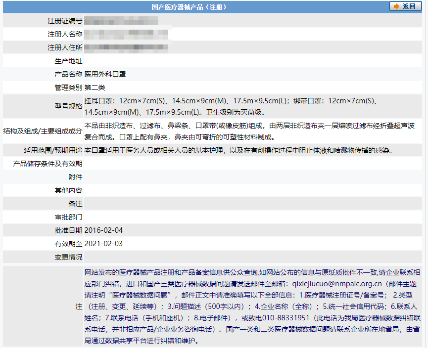
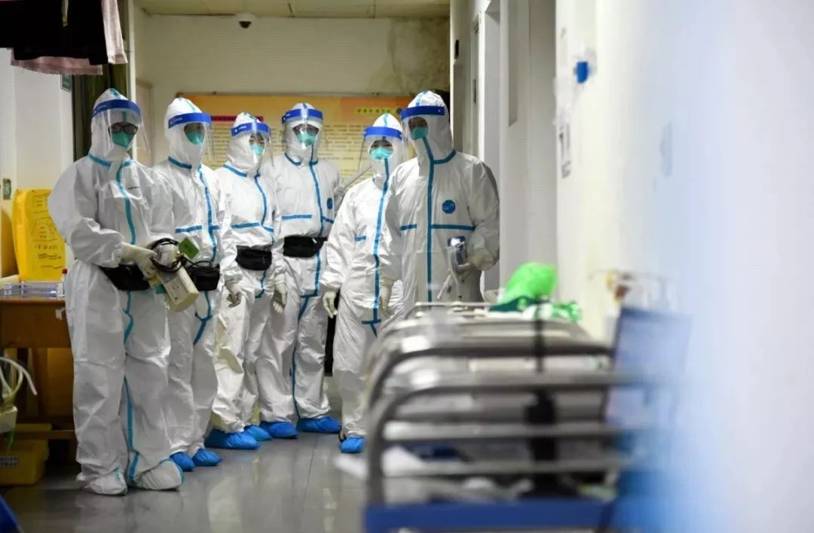
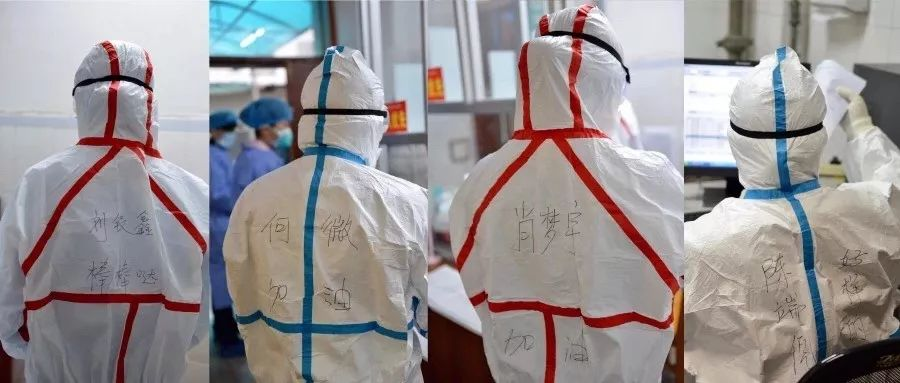

武汉一线医护人员现在缺什么
原文链接 备份链接 武汉第一批七家定点医院医用物资也存在短缺 防疫物资今日抵达汉口，明日有望缓解 本文首发于南方人物周刊 文 | 本刊记者 徐梅 赵蕾 张宇欣 编辑 | 周建平 蒯乐昊 全文约3479字，细读大约需要9分钟 有的市属一 …

按规定，他们每接一次病人，都要全车消毒、销毁防护服，不然可能会成为新的传染源。但现实情况是，他们全站连一套防护服都没了。除夕夜里两点，他没有睡觉，发了这半年里唯一一条不是关于女儿的朋友圈，是一条物资的求助。他告诉《人物》：「我们N95口罩没几个了，全站的人一起分着用，一天只能用一个，关键是我们的医用隔离服没有了。」
文｜****罗婷 杨宙 罗芊
马拉拉 韩逸
编辑｜****金匝
「几乎撑不住了」
大年三十，武汉一家三甲医院的外科护士杜菲，在办公室接了一天的电话。因为资源紧缺，她所在的医院公布了接受社会物资援助的消息，她被抽调到了这里。
这家医院现在的处境，她形容是「人满为患」。医护人员每天要消耗医用防护口罩、护目镜、防护服大约1000套，存货已经严重不足。这家医院一直很少接受社会馈赠，但这次不知道战役还要持续多久、强度多大，他们不得不这么做。
好心人很多，电话从全国各地打进来，他们是真心实意想帮忙。有位四川的捐赠者在泰国找到了口罩的货源，自己跑到网上去查口罩标准，除夕夜，他还在不停地给她发微信，确认信息无误。
但其实少有人知道，医用物资的标准是很严格的——医用防护口罩的前面都会写着一行黑色小字，注明规格，必须符合或者高于GB19083-2010；医用外科口罩必须符合或者高于YY0469-2011；防护服符合或高于GB19082-2009；护目镜要求透亮，物理防溅。
这里符合或高于的意思，是指这类物资不能低于横杠后面年份发布的新标准。比如GB19083-2010医用防护口罩可以过滤空气中的颗粒物，阻隔飞沫、血液、体液、分泌物等，包括传染性病毒。而现在大多数网友可以购买到的GB2626—2006，只能有效阻隔飞沫，用于一般公共场合的防护。
而武汉协和医院，因为物资极度缺乏，已经放弃了上述标准，护士们开始用游泳镜充当护目镜。这家医院求助华中师范大学，学校把做试验用的护目镜送了过去，还是不够。他们在向社会求助护目镜的公示里写：「无规格要求，无品牌要求。」
武汉一位文化推广人邓歌从21号开始陆续与朋友同事一同筹款，从安徽等地区购入口罩、防护服等医疗物资。1.8元的医用口罩，他们起初买了1万个，在朋友圈发了信息后，许多当地医生联系他们求助，情况最严重的是协和医院和湖北省中医院，于是他们分给了协和3000个，中医院7000个。随后更多志愿者加入，他们筹到了2100套防护服（100元一件）和4000个N95口罩（8.5元一个），物资到位的消息在微信群发出后，同样有「好多医生在群里哀嚎」，希望能被分配一些。
作为一家有定点发热门诊的医院，武汉市第六医院的情况类似。接电话时，采购科科长周金和的嗓子是哑的，还伴着咳嗽。他说医院现在「什么都缺」，最缺的是N95医用口罩和防护衣、头套。「都非常需要，现在几乎撑不住了。」根据周金和的计算，医院有1200多名职工，每天需要几千套防护服，4000个左右的口罩。眼罩虽然也缺，但好在可以反复消毒、反复使用。但是口罩不行，每4个小时必须更换，现在口罩不够，医生们只能是延长佩戴时间。
最令周金和担心的是，第六医院本来只是定点发热门诊，开辟了病区，可床位不多，但他们刚刚接到通知，医院将升级成定点救治医院，开放整个医院收治患者。还有几家医院也将被同步升级，开放床位，眼下它们的医疗物资都很成问题。
环武汉地区的物资同样紧缺，且救援路径更不畅通。在汉川市中医院，一件防护服，几个医生换着穿。在孝感市中医院，为一位金银潭医院回来的病人抽胸水时，一位主治医师把N95口罩、面罩与防护服让给了自己的助手，他说自己不要。助手告诉我们：「可能是想节约，也可能是在照顾我。」但最根本的原因还是在于，「耗材太少了」。

某医用外科口罩的注册信息，其中包括适用范围或预期用途。 图源国家药品监督管理局官网截图
感染之可能
一旦物资不足，医护人员感染的可能性便增大了。
一些医院会优先保障那些直接与病毒性肺炎患者接触科室的防护服与N95口罩供应，比如呼吸科、感染科与发热门诊。其他科室的医生们，防护条件可能会差一些。武汉协和医院一位医生告诉《人物》，她所在的科室其实一直都没有用上防护服和N95口罩，「呼吸科这些科室会去领，像我们这种科室，都很难领到。」现在上班，她用的还是常规外科口罩，穿的还是普通白大褂。原来一天只发一个口罩，现在能发两个，在物资匮乏的当下，她已经觉得满足。
很多医生都是在毫无防备的状况下被感染的。武汉大学人民医院呼吸与危重症I科主任陈国忠介绍了一些确诊病例的情况——他们感染后首先出现的症状并不在呼吸系统，而是头痛、呕吐、腹泻以及心慌、胸闷等等，所以他们很可能会到消化内科、神经内科、心血管内科等科室就诊，这些科室的医护人员如果没做好防护，便有被感染的可能。此次出现的「超级传播者」，便是在协和医院脑神经外科治疗时，传染了一个医生和13个护士，这些医护人员分别来自神经外科、小儿外科、妇科与心外、心内科。
前段时间，咸宁市第一人民医院的骨科收治了一名在铁路上班的病人，本来是骨科疾病，但之后病人开始发烧，并且愈来愈严重，安排他查肺部造影，整个肺白了一大片，25日已经确诊为新型冠状病毒性肺炎。当时跟他密切接触的两个护士，没做好防护措施，也开始发烧，不排除感染可能。
当这样的事情来临，医生同样是脆弱的个体。两位护士中的一位，年纪很轻，发着烧，忍不住哭。但医院人手不够，领导也做不了决断，她工作了一段时间才被送去隔离。在这家医院的另一个科室，也有3名医护人员被确定感染。
他们也有被感染的忧虑与恐惧。蒋鹏是武汉中心医院的一名住院医师，该医院不是武汉当地的定点医院，但还是在以「肺炎」、「肺部感染」等症状的名称将重度患者收入住院。
他和身边许多医生都担心自己也感染上了新型冠状病毒——因为没有检测用的试剂盒，他们隔一段时间在医院做肺CT来确定自己是否被感染，「有些人有症状比较急，会马上去做，做完就算没问题，隔一个星期也会复查。」
在无法进行核酸检验的情况下，他们通过影像学表现的方式来判断自己是否还健康。「肺片上如果有多发的斑片状磨玻璃阴影，我们基本上就确定自己感染了，如果没有的话，可能就会松一口气，心里就会不那么压抑。」
武汉大学中南医院彭志勇医生保护自己的方式，是尽量多睡会儿。每天下班后他不看电视，也不看手机，「为什么我们要尽量睡觉，因为有足够的睡眠才能保障免疫力，我们不希望疫情还没有好，我们自己先倒了。」如果真中招，他是这么想的，重症的可能性大约是30%，就算是重症，能治好的概率超过80%，「我想还不至于这么差的运气吧。」
而武汉急救中心的付真医生，既没有做CT的条件，甚至也难保障睡眠时间。除夕夜钟声敲响后，付真才下班。急救医生，是与病人接触的第一道医院防线，现在他平均每天要接诊10 个左右疑似病人。「每天都在不停出诊，接的大部分都是发热的病人，非常忙，现在 120 的电话都打爆了，平均要排队 20 分钟才打得进去。」
按规定，他们每接一次病人，都要全车消毒、销毁防护服，不然可能会成为新的传染源。但现实情况是，他们全站连一套防护服都没了。除夕夜里两点，他没有睡觉，发了这半年里唯一一条不是关于女儿的朋友圈，是一条物资的求助。他告诉《人物》：「我们N95口罩没几个了，全站的人一起分着用，一天只能用一个，关键是我们的医用隔离服没有了。」
好心人看见了，给他捐了几箱防护服，不是医用的，只是劳保用品，但他还是很感激了，「有总比没有好。」特地又发了一条，感谢那些帮忙牵线的朋友，把提供帮助的公司LOGO拍了出来，道了好几声感谢。
他和妻子都是医生，都在连轴转。不知道自己有没有被感染，「怕、恐惧、焦虑」，但没时间想未来。凌晨四点，他又出发去拿防护服。最重要是先解决好今天。

隔离病房里的医务人员 图源武汉协和医院微信公众号
拒载、退单与免费房间
1月23日，武汉封城，所有公共交通全部停运，数量巨大的医护人员出行困难。之后民间迅速响应，志愿者们组成队伍，义务接送他们上下班。24日，在被出租车多次拒载之后，武汉协和医院的医生张蓉进入了志愿者群，请求帮助。
张蓉本来是下午4点上班，担心打不到车，中午12点她就出了门，但还是没打到——过年期间出租车本来就少，有的车本来停下来了，但一听说她去协和医院，要么说不送，要么说不顺路，都拒载了。她能理解司机们的顾虑，都是有一家老小的人，但她还是隐隐觉得难过。
一个相似的事情是，武汉疫情刚刚公布时，全城都处于震惊之中，协和医院的医生们订外卖，很多都被退单了。往年过年吃饭也难，平常订餐的地方会关门，但她没想到今年会这么难。当被问到「被退单之后怎么吃饭」时，她说：「我们就在科室里备了很多泡面，基本都是烧水泡面。」然后停顿了一下，电话那头，她哭了，几秒没说话，只有吸鼻子的声音。
吃不饱饭，同样跟医疗物资缺乏直接相关。武汉中心医院的一些医生被派到了定点医院支援，因为人手与物资的双重紧缺，对他们来说，吃饭、喝水、上厕所都不是容易的事情。「就算是简单地脱口罩和帽子，你也需要找个干净的地方。」
这种状况之下，民间生长出力量，形成组织，开始帮助解决医生的困境。
在那家三甲医院接听电话的护士杜菲说，目前已经接到了50多家武汉市本地旅馆和酒店的电话，都表示可以免费接收不能回家的医生入住。武汉过江隧道封闭之后，很多医生干脆就不再回家，也省得让家人承担感染的风险。有的医院也腾出来一些病房给医生当临时宿舍，他们换完班，防护服一脱，消了毒，就在病房凑合着过夜。
武汉之外，想帮忙的人们也着急。一个本来是用来接送医护人员上班的QQ群，慢慢变成了物资对接群。新的问题是，就算有人买到了口罩、双氧水和防护服，货物却无法马上抵达需要的地方。最后一公里是个难关，过一会儿，就有求市内货车联系方式的消息蹦出来。
25日，市内的交通也断了。武汉发布新型肺炎防控指挥部第九号通告：自2020年1月26日0时起，除经许可的保供运输车、免费交通车、公务用车外，中心城区区域实行机动车禁行管理。这就意味着，私家车再也不能自由流动。
看到通知后，一直在筹款为医生提供防护服和口罩的志愿者邓歌和同伴们，只能回归最原始的方式——靠人力去运送。26号0点后，他们用小推车步行运送物资到武汉协和医院、武汉市中心医院、中国人民解放军中部战区总医院等，这些医院和志愿者相距不到三四公里。她估算过，一台小推车大约可以推3个箱子，一个箱子500个口罩。而至于那些距离更远的，他们只能再另想办法。

武汉多家酒店自发为各大医院一线医护人员提供免费住宿。
「现在要说新年平安」
随着各方力量的投入，物质的缺乏也许将逐渐解决，但精神上的压力，医生们只能独自面对。
武汉中心医院的医生蒋鹏说，最无助的就是目睹病人们在没有特效药的情况下，病情一步一步加重，「我们有时看着病人就活活地喘和憋，就这样活活憋死了，却没办法救他。」前几天他接触过一个病例，一位四十多岁的男性患者，最早的症状是发热，以肺部感染收到他们科。一开始患者的血氧饱和度很好，但是三四天后，喘息越来越重，最后因呼吸衰竭而死。就在去世前一天，他还和家里人正常通电话。偶尔蒋鹏会想、会问，「这个病到底什么时候结束？要传播扩散多久？还要看多少病人？」
武汉大学中南医院的彭志勇医生，曾经历过SARS和禽流感，遇到这次疫情，他还是「感到有些突然」。从前到了冬天，肺炎病人也会增多，这次最关键的是「人传人的问题」。因为疫情潜伏期长，症状指征也不明显，在前期比SARS更容易传播。目前疾病到底处于爬坡期、高峰期还是消退期，「都不好说，以流行病学家意见为准。」
他在医院重症医学科工作，这个科室管辖三个综合ICU病区，这次专门开放了一个病区按照传染病防控模式做了改装，收治重症病人。ICU难免有人去世，他和同事们最崩溃的时刻，就是明明做了很多努力，病人情况却还是不好，「太沮丧了。」
问他压力大吗？听到这个问题，他叹气了，除了身体上的疲惫，每天见到大量病人也给了医务人员很大的心理压力。没有所谓的「特效药」，不知道救治的尽头到底在哪里，他们很清楚，「这个会非常难，但是也没什么好的办法。」
从接送医生的志愿者统计的时间表来看，医生们都是很早出门，有的6点半、7点出发，深夜才到家。彭志勇说，每天早上上班后，所有医生第一个任务就是检查自己有没有发烧。如果没有，就继续工作。因为这次疫情要加班，他至少有两位同事不得不取消了婚礼。
24日，一家心理咨询机构组织了100名心理咨询师，想为医生们提供心理咨询。但他们只接到了来自湖北某市一位医生的电话。发起这项活动的咨询师说，她后来意识到：「一线的医护人员，可能完全没有时间来寻求心理援助。」
我们对彭志勇医生的采访，在除夕夜的11点44分开始。他正在从医院走回家的路上，路程半小时，这是他一天当中难得能看手机的时刻，他少有时间能够坐下来回复朋友微信，下班后，他常会在医院多呆一会儿。除夕夜的晚上，他照例推迟了回家时间，在武汉大学中南医院重症医学科办公室，和同事们一起，吃了个简单的年夜饭，「就在我们办公室里面，吃盒饭。」
每天走回家的这半个小时，是他放空自己的时间，有时会听听音乐，有时什么也不干，就是走路。除夕这个晚上，零点已过，他说自己回家的路，「好安静啊，一个人都没有。」以前路上总是有人的，过了一会儿，他纠正了自己的说法，「不是一个人都没有，是只有我一个人。」
采访最后，他对《人物》说，「新年好啊，新年要平安，以前我们都说新年快乐，我们现在说新年平安。健康才是最重要的，有了健康才能快乐。」
同一个晚上，微博上流传着一些照片，在湖南中南大学湘雅三医院发热门诊，因为穿上防护服后，医护人员看不清脸、认不出彼此，便在各自的防护服背后写上名字，还附上了加油打气的词语，分别是「何微，加油」、「陈端倪，好样的」、「刘银鑫，棒棒哒」「肖梦宇，加油」。

为方便辨认，医护人员在防护服上写上各自的名字。 图源中南大学湘雅三医院微信公众号
（应采访对象要求，杜菲、张蓉、蒋鹏、付真为化名）

人物记者
微信扫一扫赞赏作者 赞赏
长按二维码向我转账
受苹果公司新规定影响，微信 iOS 版的赞赏功能被关闭，可通过二维码转账支持公众号。
原文链接 备份链接 武汉第一批七家定点医院医用物资也存在短缺 防疫物资今日抵达汉口，明日有望缓解 本文首发于南方人物周刊 文 | 本刊记者 徐梅 赵蕾 张宇欣 编辑 | 周建平 蒯乐昊 全文约3479字，细读大约需要9分钟 有的市属一 …
原文链接 备份链接 今天，湖北省武汉市红十字会向武汉市中心医院提供了医用外科口罩4000个、医用防护服600套；向武汉市洪山区中医医院提供了医用防护服400套，84消毒液10箱，医用口罩5箱。武汉红十字会表示，接收的所有物资都将被送往一线 …
原文链接 备份链接 记者 | 驳静 董冀宁 实习记者 | 李秀莉 昨天下午，“湖北之声”发布《武汉紧急求援》，指出多家医院物资紧张，可能只够维持3-5天。本刊记者接触到的一线医护人员也反应了同样的情况。“为什么我们显得这么着急呢？病毒肆 …
原文链接 备份链接 各方资源和关注的焦点是武汉，但在周边16座也因疫情而被封闭的城市里，他们正在经历着什么 文 |《财经》记者 房宫一柳 宋玮 黎诗韵 管艺雯 陈晶 余洋洋 实习生 马可欣 张凡 编辑 | 宋玮 1月24日，农历鼠年除夕 …
原文链接 备份链接 *************▲************* 大批量新国标标准的口罩正进入嘉兴“心脏仓” 。 （新华社/阿里巴巴供图/图） 全文共*4420*字，阅读大约需要*10*分钟。 “缺口以万为单位”，武汉市汉口医 …